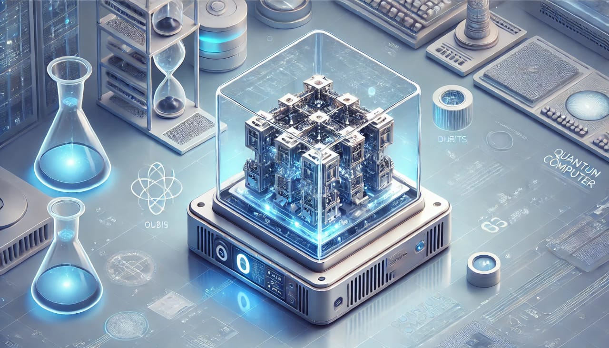

Your Gateway to Tech Mastery
Learn, Grow, and Innovate
Quantum computing is a revolutionary technology that leverages the principles of quantum mechanics to perform computations at an unprecedented speed and scale. Unlike classical computers that rely on bits to represent information as 0s and 1s, quantum computers use quantum bits or qubits, which can exist in multiple states simultaneously, enabling them to process information exponentially faster.
HOW TO USE AI
Ai tools are fast and accurate with the help of thos ai tools we can do any work or complete any work by 10x faster so learning ai is the important skill we hve to learn in 2025

Digital Marketing
Content for Topic 2 goes here...

Virtual reality (VR) and augmented reality (AR)
Virtual reality (VR) and augmented reality (AR) have exciting potential in the future of gaming, marketing, e-commerce, education, and many other fields. Both technologies are known for their enriched experience that brings together a virtual world and the real one with enhanced, 3-D visuals.

BLOCKCHAIN
Blockchain is a digital ledger that records transactions across a network of computers, making it difficult to alter or manipulate the system. It's a decentralized, public database that uses cryptography to encrypt information and ensure user privacy.

BIOTECHNOLOGY
This field is transforming healthcare and agriculture, and includes advancements like gene editing and personalized medicin

ARTIFICIAL INTELLIGENCE
Content for Topic 6 goes here...

EDGE COMPUTING
Edge computing is a networking technology that processes and stores data closer to the user, rather than in a remote data center. This technology reduces latency and delays, and makes data processing more efficient.